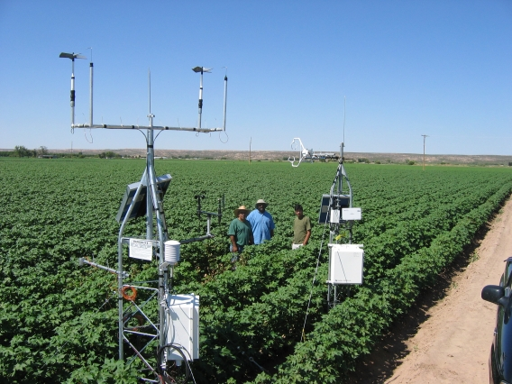

Evapotranspiration
Research > Remote sensing | Energy | Water management | flow measurement | Evapotranspiration | International projects |
Evapotranspiration
| Paper |
-
Hargreaves, Samani Z.,(1985). Hargreaves-Samani-85 (Reference Crop Evapotranspiration from Ambient Air Temperature). Original Paper
-
Samani Z., Bawazir S., Bleiweiss M., Skaggs, R., and Tran V. (2007). Estimating Daily Net Radiation over Vegetation Canopy through Remote Sensing and Climatic Data. Online Paper
-
Samani, Z., Estimating Solar Radiation and Evapotranspiration Using Minimum Climatological Data (Hargreaves-Samani equation). Online Paper
Abstract: Net radiation (Rn)=key variable in hydrological studies. Measured net radiation data are rarely available and are often subject
to error due to equipment calibration or failure. In addition, point measurements of net radiation do not represent the diversity of the
regional net radiation values which are needed for large scale evapotranspiration mapping. A procedure has been developed to estimate
daily net radiation using canopy temperature, albedo, short wave radiation and air temperature. This procedure makes it possible to
estimate Rn by combining information from satellite and local weather stations. Three different methodologies are presented to estimate
net radiation. Comparisons between net radiation using the three methods resulted in average error ranging from 1 to 30% and standard
error of estimate ranging from 1.06 to 5.34 MJ/m2 / day.
Keywords: Evapotranspiration; Net radiation; Satellite; Solar radiation; Weather station; Classification
description; Irrigation and drainage.
| Eddy Covariance Tower in Cotton, La Union, NM 2004 |

| Boundary Layer |

(c) Zohrab A. Samani